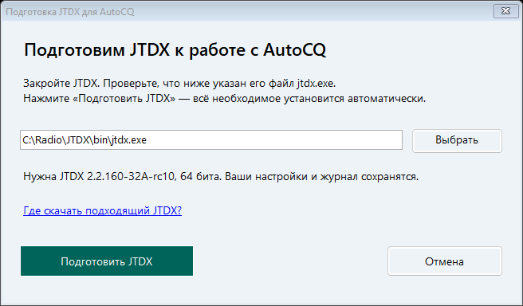

Как пользоваться AutoCQ
Руководство для AutoCQ 0.9.6 · English · Главная страница
AutoCQ нужен, чтобы JTDX продолжал работать после очередной связи. Пока вы отвечаете одному корреспонденту, модуль запоминает остальных. Закончив QSO, он выбирает следующую станцию или возвращается к общему вызову. Время работы и правила выбора задаёте вы.
В режиме мониторинга всё иначе: программа слушает эфир, ждёт нужную страну или позывной и начинает вызов только при появлении подходящей станции.
1. Что скачать
Нужны два архива: JTDX 2.2.160-32A-rc10, 64 бита и последний выпуск AutoCQ.
На GitHub откройте Assets и выберите файл JTDX-AutoCQ-…-win64.zip. Архивы «Source code» предназначены для разработчиков. Установите JTDX, проверьте свой позывной, звук, приём и передачу обычным способом, затем закройте JTDX.
Архив AutoCQ распакуйте через «Извлечь всё» в Проводнике. Удобно создать папку AutoCQ в «Документах». Сохраните все файлы архива вместе: рядом с программой находятся инструкция и файлы подготовки.
2. Подготовка и запуск
Откройте JTDX-AutoCQ.exe, пока JTDX закрыт. Выберите начальные параметры: для знакомства подойдут 5 минут, 2 вызова и ожидание 73 в течение 2 ответных периодов. Нажмите «1. Подготовить».
Если дополнение к JTDX ещё не установлено, откроется такое окно:

Проверьте путь к установленному jtdx.exe. Если он неверный, нажмите «Выбрать файл» и найдите его в папке JTDX, обычно внутри bin. Нужна именно 2.2.160-32A-rc10, 64 бита. Нажмите «Подготовить JTDX», дождитесь сообщения о готовности и нажмите «Продолжить». При необходимости Windows попросит разрешение изменить установленный файл.
AutoCQ сохраняет оригинальный jtdx.exe рядом с ним. Ваш позывной, звук, трансивер, журнал и настройки окна сохраняются. При следующей подготовке эта процедура уже не понадобится, если дополнение актуально.
Теперь запустите JTDX. В связке с LogHX используйте значок JTDX в самом LogHX. Выберите диапазон и FT8 или FT4. Через несколько секунд в AutoCQ появится частота; иногда нужно подождать до 15 секунд.
В JTDX оставьте включёнными «АвтоTX» и штатный «Автовыбор», а «Одиночное QSO» — выключенным. Фильтр и очистку левого окна настройте так, как вам удобно: модуль не требует режима «Без фильтра» или постоянно заполненного окна.
Чтобы начать с CQ, очистите «Позывной DX» в JTDX и нажмите «2. Включить автомат» в AutoCQ.
3. Что видно в главном окне

Вверху показаны подключение JTDX, частота, режим, текущая станция и оставшееся время. Под ними — состояние автомата и основные параметры. Ниже находятся кнопки запуска и остановки, очередь станций, список сообщений левого окна и небольшой журнал действий.
«СТОП — Halt TX» останавливает автомат и посылает JTDX команду прекратить передачу. Это немедленная остановка. Для планового окончания пользуйтесь таймером.
Когда таймер истечёт, надпись «Завершаю QSO / очередь» означает, что модуль ещё работает: он заканчивает текущую связь и обрабатывает доступные вызовы. Станции с пометкой «Нет ответа» не удерживают сеанс. После завершения параметры снова становятся доступны.
Кнопка «Как пользоваться» открывает эту инструкцию без интернета. Кнопка «Обновления» показывает установленную версию и проверяет новые выпуски.
4. Основные настройки
| Поле | Что оно меняет |
|---|---|
| Время автомата, мин | Через сколько минут начать завершение работы. Текущая связь заканчивается до остановки. |
| Ожидать 73, ответных периодов | Сколько ответных периодов дать корреспонденту для финального подтверждения. В FT8 возможность ответа той же станции наступает каждые 30 секунд. |
| Вызовов без ответа | Сколько раз вызывать станцию, если ответа от неё нет. |
| CQ без ответа до поиска | После скольких общих вызовов искать станцию в левом окне, если включён поиск. |
| Смена периода без ответа, мин | Когда при длительном отсутствии ответов на CQ попробовать другой период передачи. |
| Хранить позывной в очереди, мин | Когда удалять устаревшие записи очереди. |
«Поиск станций CQ» разрешает поиск по левому окну после заданного числа общих вызовов. После неудачного вызова найденной станции модуль возвращается к CQ: общий вызов → станция → общий вызов.
Число вызовов и ожидание 73 меняйте перед «Подготовить», пока JTDX закрыт: эти параметры согласуются со счётчиками JTDX. Подсказка под полями показывает, когда изменения можно применить.
5. Очередь: кого вызовет программа
Станции, которые зовут вас, попадают в очередь автоматически. Если несколько станций позвали одновременно, преимущество получают те, с кем ещё не было связи на текущем диапазоне в текущем режиме. Затем учитываются приоритеты DXCC и порядок очереди.
Если станция, которую модуль только начал звать, не ответила, а другая позвала вас в этом приёмном периоде, AutoCQ отвечает вызывающей. Начавшийся обмен рапортами не прерывается ради другой станции.
Для ручного добавления введите позывной под вкладкой «Очередь станций» и нажмите «Добавить». После текущего QSO и доступных вызывающих модуль позовёт его напрямую, без ожидания CQ или другого сообщения от этой станции. Такой вызов использует текущие период и звуковую частоту TX JTDX.
Кнопки «Выше» и «Ниже» меняют порядок, «Изменить» исправляет позывной, «Удалить» убирает запись. После лимита попыток появляется «Нет ответа». Если хотите попробовать ещё раз, выделите станцию и нажмите «Повторить». Завершённая связь убирает старую запись, даже если запись в журнале задержалась.
Во вкладке «Станции из левого окна JTDX» можно выделить свежее сообщение и нажать «Позвать выбранную». Эта вкладка показывает доступные модулю сообщения, а не полный журнал эфира.
6. Приоритеты и исключения DXCC
В «Приоритетных DXCC» отметьте страны и территории, которым хотите отдавать предпочтение. Перед своим CQ AutoCQ сможет выбрать подходящую приоритетную станцию из левого окна. Галочка «Вызывать приоритетные DXCC после 73, RRR или RR73» разрешает выбирать её и после такого сообщения.
По прощанию выбирается отправитель. Например, в сообщении «AA1AA JA1BBB 73» прощается JA1BBB — он и будет кандидатом на вызов. Сообщение должно быть свежим и доступным модулю после фильтра JTDX.
В «Исключениях DXCC» отметьте страны, которые автомат должен пропускать. Исключение действует также на приоритеты, ручную очередь и мониторинг. Если цель не вызывается, проверьте, не находится ли она в исключениях.
7. Мониторинг для дипломов и нужных позывных
Откройте «Цели мониторинга». Можно выбрать страны DXCC, точные позывные и маски. Достаточно совпадения с одной из выбранных целей.

Точные позывные разделяйте пробелами, запятыми или переносами строк. В масках звёздочка означает любое число знаков, а вопросительный знак — один знак: 9J* подходит позывным с началом 9J, K?ABC — K1ABC или K2ABC.
Сохраните цели, включите «Режим мониторинга» и нажмите «2. Включить мониторинг». Программа останется на приёме и будет искать свежие CQ, 73, RRR и RR73 от подходящих станций. При выборе по финальному сообщению вызывается его отправитель. После QSO или лимита вызовов AutoCQ снова слушает эфир. Общий вызов в этом режиме не передаётся.
«Одна связь на цель на диапазоне»
Это ограничение относится к цели, а не ко всем станциям по отдельности. Если вы выбрали Японию и уже провели QSO с любой японской станцией на 20 м, цель «Япония на 20 м» выполнена. Другую японскую станцию на 20 м модуль пропустит. На 40 м та же страна может ещё оставаться доступной.
Если цель — точный позывной, проверяется связь с ним. Для маски выполненной считается цель, которой соответствует проведённая связь. Учитывается журнал JTDX, в том числе предыдущие сеансы. Чтобы работать с несколькими станциями одной страны на том же диапазоне, снимите галочку.
Станции, которые не ответили
Во вкладке «Пауза мониторинга» находятся станции, не ответившие на заданное число вызовов. Для каждой показаны оставшиеся минуты и секунды, а также местное время окончания паузы. Отсчёт обновляется каждую секунду. Станция, с которой сейчас идёт обмен, в этот список не попадает.

Пауза длится пять минут после неудачной попытки. Когда она закончится, строка исчезнет, и AutoCQ сможет снова выбрать станцию по новому свежему сообщению. Само истечение времени не запускает передачу. Кнопка «Снять отметку попытки» во вкладке левого окна позволяет попробовать раньше.
При остановке мониторинга, в том числе по таймеру, список и его паузы очищаются. Выключение галочки «Режим мониторинга» также сбрасывает их. Другие записи и проведённые связи сохраняются.
8. Обновление программы

При запуске и раз в сутки AutoCQ проверяет новые выпуски на GitHub. Если версия новее установленной, появится уведомление и выделится кнопка «Обновления». Проверку можно выключить галочкой в этом разделе. Она обращается к публичным файлам проекта; настройки, позывной и журнал никуда не отправляются.
Нажмите «Проверить обновления», затем «Скачать». Это можно делать во время работы. Перед установкой закончите связь и закройте JTDX. Нажмите «Обновить и перезапустить»; AutoCQ закроется, проверит архив, заменит свои файлы и откроется снова. При необходимости подтвердите запрос Windows. LogHX можно оставить открытым; JTDX запустите из него после обновления и обычной подготовки.
Очередь и настройки сохраняются. При ошибке замены установщик пытается вернуть предыдущие файлы; резервная копия остаётся в папке загруженного обновления.
В версиях до 0.9.6 кнопки обновления нет. Для первого перехода закройте JTDX и AutoCQ, извлеките новый ZIP в папку AutoCQ с заменой файлов и откройте новую программу. В дальнейшем пользуйтесь встроенным разделом.
9. Если что-то не получается
В AutoCQ нет частоты или не включается автомат. Закройте JTDX, нажмите «1. Подготовить», затем запустите тот же JTDX через LogHX. Подождите до 15 секунд. Если AutoCQ сообщает о другой сборке, нужна 32A-rc10 Win64.
Цель видна слева, но её не зовут. Проверьте DXCC, точный позывной или маску, исключения и галочку «Одна связь на цель на диапазоне». В мониторинге подходят CQ, 73, RRR, RR73. После неудачных вызовов действует пятиминутная пауза для этой станции. Чтобы попробовать раньше, выделите её во вкладке левого окна и нажмите «Снять отметку попытки». Во время текущего QSO новая цель ждёт окончания связи.
Время вышло, а параметры ещё неактивны. Посмотрите состояние: «Завершаю QSO / очередь» означает, что сеанс ещё заканчивается. Для немедленной остановки есть «СТОП — Halt TX».
После остановки модуль показывает передачу JTDX. Проверьте собственные «АвтоTX» и «Автовыбор» в JTDX: модуль отображает и ручную или штатную передачу. Для немедленного прекращения используйте «Стоп Tx» в JTDX.
GitHub недоступен. Работа в эфире не зависит от проверки обновлений. Попробуйте проверку позднее или скачайте выпуск вручную.
Для обычной работы без AutoCQ закройте JTDX, затем нажмите «Восстановить прежние настройки JTDX». Это восстанавливает параметры подключения и счётчиков; дополнение в jtdx.exe остаётся. Команда для полного снятия дополнения описана ниже для опытных пользователей.
10. Обратная связь
Сообщить об ошибке или предложить функцию · Вопросы и обсуждения · Статья на сайте
В форме укажите версию AutoCQ и JTDX, что делали, что ожидали и что получилось. Для события в эфире полезно указать время. Прикладывайте только нужный фрагмент журнала и проверьте, нет ли в нём личных данных.
Для опытных пользователей: снять дополнение JTDX
При закрытом JTDX из папки AutoCQ выполните:
.\JTDX-AutoCQ-Patch.exe --jtdx "C:\JTDX64\160-32A-rc10\bin\jtdx.exe" --restoreУкажите свой путь. Утилита проверит резервную копию jtdx.exe.autocq-original и восстановит оригинал. Этот шаг нужен только для полного возврата исходного исполняемого файла.